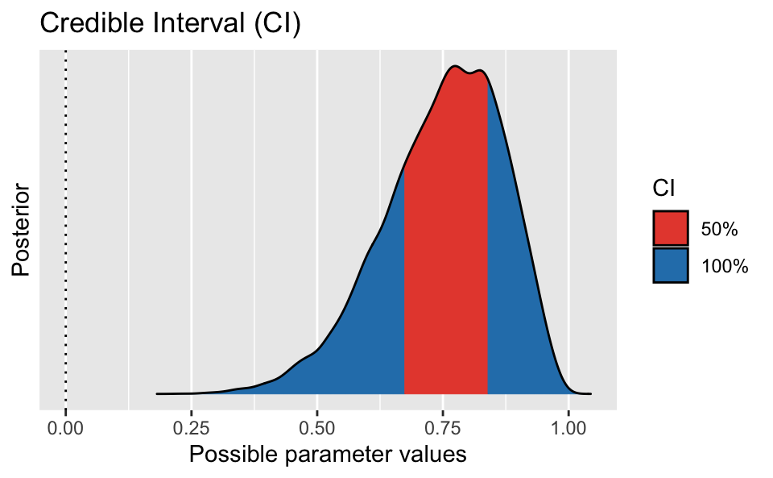
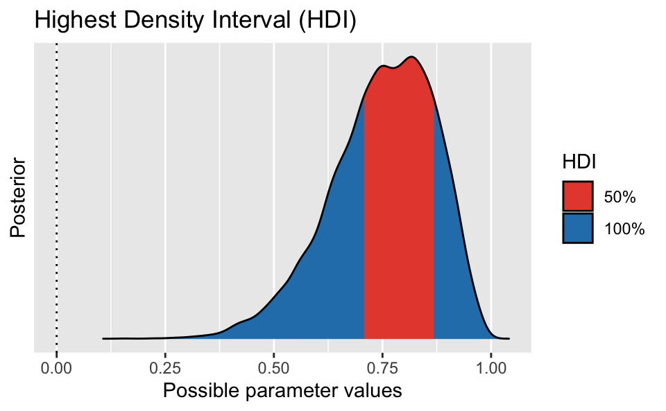

options(digits = 2)Zwielichter-Dozent-Bayes
bayes
probability
ppv
Exercise
Nach einem langen Unitag machen Sie sich auf den Weg nach Hause; ihr Weg führt Sie durch eine dunkle Ecke. Just dort regt sich auf einmal eine Gestalt in den Schatten. Die Person spricht Sie an: „Na, Lust auf ein Spielchen?“. Sie willigen sofort ein. Die Person stellt sich als ein Statistiker vor, dessen Namen nichts zur Sache tue; das Gesicht kommt Ihnen vage bekannt vor. „Pass auf“, erklärt der Statistiker, „wir werfen eine Münze, ich setze auf Zahl“. Dass er auf Zahl setzt, überrascht Sie nicht. „Wenn ich gewinne“, fährt der Statistiker fort, „bekomme ich 10 Euro von Dir, wenn Du gewinnst, bekommst Du 11 Euro von mir. Gutes Spiel, oder?“. Sie einigen sich auf 10 Durchgänge, in denen der Statistiker jedes Mal eine Münze wirft, fängt und dann die oben liegende Seite prüft. Erster Wurf: Zahl! Der Statistiker gewinnt. Pech für Sie. Zweiter Wurf: Zahl! Schon wieder 10 Euro für den Statistiker. Hm. Dritter Wurf: . . . Zahl! Schon wieder. Aber kann ja passieren, bei einer fairen Münze, oder? Vierter Wurf: Zahl! Langsam regen sich Zweifel bei Ihnen. Kann das noch mit rechten Dingen zugehen? Ist die Münze fair? Insgesamt gewinnt der zwielichte Statistiker 8 von 10 Durchgängen.
Unter leisem Gelächter des Statistikers (und mit leeren Taschen) machen Sie sich von dannen. Hat er falsch gespielt? Wie plausibel ist es, bei 10 Würfen 8 Treffer zu erhalten, wenn die Münze fair ist? Ist das ein häufiges, ein typisches Ereignis oder ein seltenes, untypisches Ereignis bei einer fairen Münze? Wenn es ein einigermaßen häufiges Ereignis sein sollte, dann spricht das für die Fairness der Münze. Zumindest spricht ein Ereignis, welches von einer Hypothese als häufig vorausgesagt wird und schließlich eintritt, nicht gegen eine Hypothese. Zuhause angekommen, denken Sie sich, jetzt müssen Sie erstmal in Ruhe die Posteriori-Verteilung und die PPV ausrechnen!
Berechnen Sie die Posteriori-Verteilung mit der Gittermethode! Gehen Sie von einer gleichverteilten Priori-Wahrscheinlichkeit aus. Visualisieren Sie sie. Alle folgenden Teil-Fragen bauen auf der Post-Verteilung auf.
Wie groß ist die Wahrscheinlichkeit, auf Basis der Post-Verteilung, dass die Münze zugunsten des Dozenten gezinkt ist?
Geben Sie das 50%-PI und 50%-HDPI zum Parameterwert (\(p\) der Münze) an!
Mit welcher Wahrscheinlichkeit liegt die Trefferchance der Münze zwischen \(p=.45\) und \(p=.55\), ist also nicht “nennenswert” gezinkt?
Was ist der wahrscheinlichste Parameterwert (Trefferchance der Münze)?
Geben Sie das 90%-PI und 90%-HDI zu Parameterwert (\(p\) der Münze) an!
Berechnen Sie die PPV! Visualisieren Sie sie. Interpretieren Sie die PPV.
Diskutieren Sie die Annahme einer Gleichverteilung des Priori-Wertes von \(p\)!
Solution
- Berechnen Sie die Posteriori-Verteilung mit der Gittermethode! Visualisieren Sie sie. Alle folgenden Teil-Fragen bauen auf der Post-Verteilung auf.
p_grid <- seq( from=0 , to=1 , length.out=1000 ) # Gitterwerte
prior <- rep( 1 , 1000 ) # Priori-Gewichte
likelihood <- dbinom(8, size = 10, prob=p_grid)
unstandardisierte_posterior <- likelihood * prior
posterior <- unstandardisierte_posterior / sum(unstandardisierte_posterior)
# Stichproben ziehen aus der Posteriori-Verteilung:
samples <-
tibble(
gewinnchance_muenze = sample(p_grid , prob=posterior, size=1e4, replace=TRUE))Visualisierung:
samples %>%
ggplot() +
aes(x = gewinnchance_muenze) +
geom_histogram() +
labs(title = "Posterior-Verteilung",
x = "Gewinnchance der Münze (50%: faire Münze)")
- Wie groß ist die Wahrscheinlichkeit, auf Basis der Post-Verteilung, dass die Münze zugunsten des Dozenten gezinkt ist?
samples %>%
count(gewinnchance_muenze > .5) %>%
mutate(prop = n / sum(n))# A tibble: 2 × 3
`gewinnchance_muenze > 0.5` n prop
<lgl> <int> <dbl>
1 FALSE 318 0.0318
2 TRUE 9682 0.968 - Geben Sie das 50%-PI (Perzentilintervall) und 50%-HDI zum Parameterwert (\(p\) der Münze) an!
library(easystats)
eti(samples, ci = .5)Equal-Tailed Interval
Parameter | 50% ETI
----------------------------------
gewinnchance_muenze | [0.67, 0.84]hdi(samples, ci = .5)Highest Density Interval
Parameter | 50% HDI
----------------------------------
gewinnchance_muenze | [0.71, 0.87]Ein PI wird auch equal tail interval genannt, weil die beiden “abgeschnitten Randbereiche” links und rechts die gleichen Flächenanteil (Wahrscheinlichkeitsmasse) aufweisen.
Interesant ist, dass das PI und das HDI zu unterschiedlichen Ergebnissen kommen. Das lässt auf eine schiefe Verteilung schließen. Außerdem eröffnet es den Raum zur Diskussion, welches Intervall man berichtet. Um diese Frage besser zu verstehen, können wir die Intervalle visualisieren.
Bonus: Visualisieren wir die Intervalle:
PI:
eti(samples, ci = .5) %>% plot()
HDI:
hdi(samples, ci = .5) %>% plot()
Das HDI ist schmäler und liegt näher am Modus. Vermutlich ist das HDI zu bevorzugen.
- Mit welcher Wahrscheinlichkeit liegt die Trefferchance der Münze zwischen \(p=.45\) und \(p=.55\), ist also nicht “nennenswert” gezinkt (auf Basis unserer Modellannahmen)?
samples %>%
count(gewinnchance_muenze >= 0.45 & gewinnchance_muenze <= .55) %>%
mutate(prop = n/sum(n))# A tibble: 2 × 3
`gewinnchance_muenze >= 0.45 & gewinnchance_muenze <= 0.55` n prop
<lgl> <int> <dbl>
1 FALSE 9531 0.953
2 TRUE 469 0.0469Die Wahrscheinlichkeit, dass die Münze nicht nennenswert gezinkt ist (nach unserer Definition), ist gering. Man sollte vielleicht erwähnen, dass unsere Definition von “nicht nennenswert gezinkt” plausibel ist, und andere (vernünftige) Definitionen zu einem sehr ähnlichen Ergebnis kämen.
- Was ist der wahrscheinlichste Parameterwert (Trefferchance der Münze)?
samples %>%
map_estimate()MAP Estimate
Parameter | MAP_Estimate
----------------------------------
gewinnchance_muenze | 0.82map_estimate steht für …
Find the Highest Maximum A Posteriori probability estimate (MAP) of a posterior, i.e., the value associated with the highest probability density (the “peak” of the posterior distribution). In other words, it is an estimation of the mode for continuous parameters.
(aus der Hilfeseite der Funktion)
- Geben Sie das 90%-PI und 90%-HDI zum Parameterwert (\(p\) der Münze) an!
library(easystats)
eti(samples, ci = .9)Equal-Tailed Interval
Parameter | 90% ETI
----------------------------------
gewinnchance_muenze | [0.53, 0.92]hdi(samples, ci = .9)Highest Density Interval
Parameter | 90% HDI
----------------------------------
gewinnchance_muenze | [0.57, 0.94]- Berechnen Sie die PPV! Visualisieren Sie sie. Interpretieren Sie die PPV.
PPV <-
samples %>%
mutate(anzahl_kopf = rbinom(n = 1e4, size = 10, prob = gewinnchance_muenze))Visualisierung:
PPV %>%
ggplot() +
aes(x = anzahl_kopf) +
labs(title = "PPV") +
geom_bar() # geom_bar() ginge auch, sieht aber bei wenig Balken nicht so gut aus.
Laut der PPV sind 8 von 10 Treffern der Wert, der mit der höchsten Wahrscheinlichkeit zu beobachten sein wird. Allerdings sind 7 oder 9 Treffer fast genauso wahrscheinlich. Etwas genauer:
PPV %>%
count(between(anzahl_kopf, 7,9)) # "zähle mir, wie oft ein Wert ZWISCHEN (between) 7 und 9 vorkommt"# A tibble: 2 × 2
`between(anzahl_kopf, 7, 9)` n
<lgl> <int>
1 FALSE 3840
2 TRUE 6160Mit dieser Wahrscheinlichkeit ist ein Wert zwischen 7 und 9 zu beobachten, wenn man den Versuch wiederholt, laut dem Modell.
PPV %>%
eti(anzahl_kopf, ci = .9)Equal-Tailed Interval
Parameter | 90% ETI
-----------------------------------
gewinnchance_muenze | [0.53, 0.92]
anzahl_kopf | [4.00, 10.00]Unser Modell sieht einen “Passungsbereich” (ein Perzentilintervall) von 4 bis 10 Treffern als mit 90% Wahrscheinlichkeit passend an.
- Diskutieren Sie die Annahme einer Gleichverteilung des Priori-Wertes von \(p\)!
Zwar hat eine Gleichverteilung der Priori-Werte den Vorteil, dass sie “objektiv” ist in dem Sinne, dass kein Wert “bevorteilt” wird; alle gelten als gleich wahrscheinlich. Aber das ist hochgradig unplausibel: So ist z.B. der Wert \(p=1\) logisch unmöglich, da wir nicht nur Treffer beobachtet haben. Ein Wert von z.B. \(p=0.999\) erscheint uns ebenfalls sehr unwahrscheinlich. Nützlicher erscheint daher vielleicht doch eine Priori-Verteilung, die extreme Werte von \(p\) als unwahrscheinlich bemisst.
Categories:
- bayes
- probability
- ppv